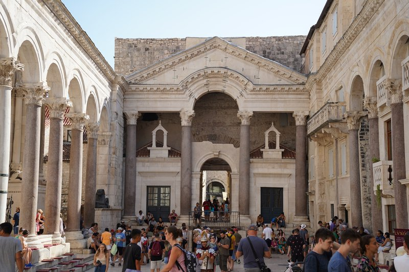
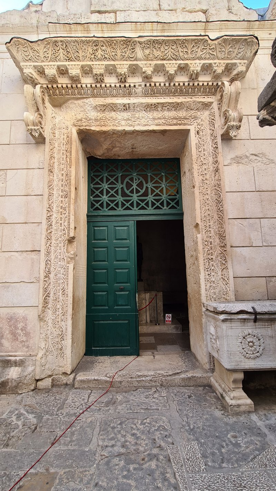
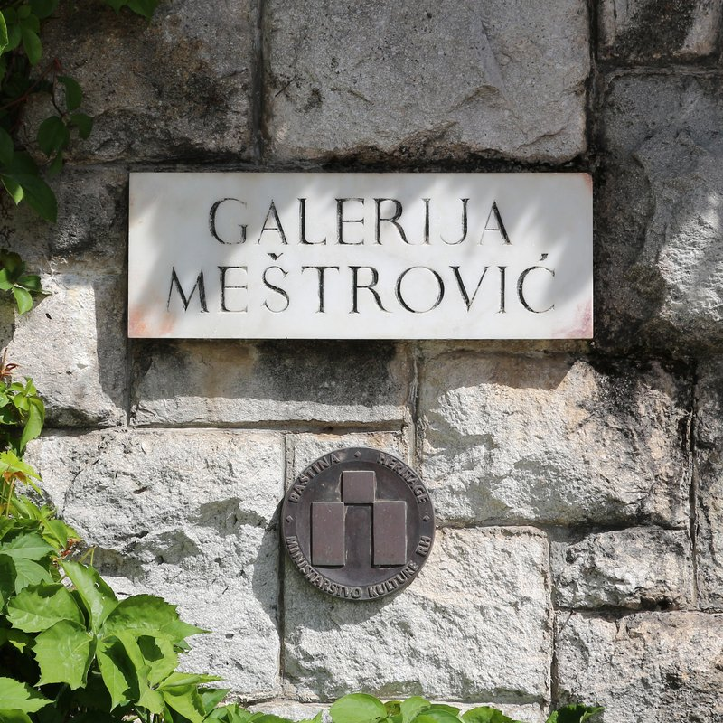
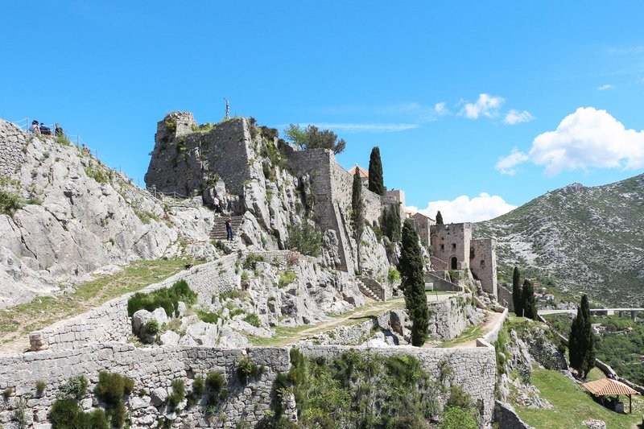

TRIP OVERVIEW
Day 1 – Peristyle · Cathedral of Saint Domnius · Temple of Jupiter · Riva
Day 2 – Meštrović Gallery · Marjan Hill · Bačvice Beach
Day 3 – Gregory of Nin · Narodni Trg · Klis Fortress
Day 1
🏨 From Hotel: 🚶 5 min · 🚕 2 min → Peristyle of Diocletian's Palace
1. Peristyle of Diocletian's Palace
↳ The outdoor ceremonial courtyard at the heart of a Roman imperial palace built around 305 AD — café tables and street musicians now occupy the space where emperors once processed, with Egyptian sphinxes still standing watch.

🚶 2 min · 🚕 1 min → Cathedral of Saint Domnius
2. Cathedral of Saint Domnius
↳ One of the world's best-preserved Roman mausoleums, built as Diocletian's tomb in the 4th century and converted into a cathedral by the 7th — the octagonal bell tower climbs to panoramic views over Split and the Adriatic.
🏛️ Monday - Saturday 8:00am - 7:00pm · Sunday 12:30pm - 6:30pm
⏰ ~1h

🚶 2 min · 🚕 1 min → Temple of Jupiter
3. Temple of Jupiter
↳ A near-intact 4th-century Roman temple tucked inside the palace warren — the barrel-vaulted ceiling, ornate friezes, and a headless Egyptian sphinx guard what was later converted into a baptistery; one of the finest small Roman interiors in existence.
🏛️ Monday - Saturday 8:00am - 7:00pm · Sunday 12:30pm - 6:30pm
⏰ ~30 min

🚶 3 min · 🚕 1 min → Riva Waterfront Promenade
4. Riva Waterfront Promenade
↳ Split's marble-paved living room along the harbor — the south walls of Diocletian's Palace rise directly from the Adriatic here, lined with café terraces, palm trees, and the constant ferry traffic to the Dalmatian islands.

🚶 5 min · 🚕 2 min → hotel
Day 2
🏨 From Hotel: 🚕 7 min · 🚶 22 min → Meštrović Gallery
1. Meštrović Gallery
↳ Croatia's greatest sculptor designed this white-stone villa as his own home and studio — 200 bronze and marble works displayed across terraces and salons overlooking the Adriatic; one of Europe's most personal art museums.
🏛️ Tuesday - Sunday 9:00am - 7:00pm
🚫 Closed Monday
⏰ ~1h 30 min

🚶 12 min · 🚕 5 min → Marjan Hill
2. Marjan Hill
↳ Split's forested peninsula park rising 178 m above the city — pine-shaded paths lead to medieval hermit chapels and a summit belvedere with sweeping views over the Dalmatian islands, with walking trails starting right beside the Meštrović Gallery.

🚶 35 min · 🚕 10 min → Bačvice Beach
3. Bačvice Beach
↳ Split's iconic sandy cove — unusually shallow warm water makes it the birthplace of picigin, a uniquely Croatian ball-juggling game played standing in the surf; the promenade above buzzes with beach bars well into the evening.

🚶 18 min · 🚕 6 min → hotel
Day 3
🏨 From Hotel: 🚶 5 min · 🚕 2 min → Gregory of Nin Statue
1. Gregory of Nin Statue
↳ Ivan Meštrović's monumental bronze of the 10th-century bishop who fought for the Croatian language in church — the big toe on his left foot is polished gold from centuries of good-luck rubs by passersby outside the Golden Gate.

🚶 4 min · 🚕 1 min → Narodni Trg
2. Narodni Trg
↳ Split's medieval public square — flanked by a 15th-century town hall and a Gothic clock tower; locals call it Pjaca and it has been the city's social heart since the Middle Ages, hosting markets and public debates for six centuries.

🚕 21 min → Klis Fortress
3. Klis Fortress
↳ A dramatic 3000-year-old clifftop stronghold 10 km north of Split that held off Ottoman invasions for decades — Game of Thrones fans will recognize it as the slave city of Meereen; views from the ramparts span Split, the islands, and the Dinaric Alps.
🏛️ Daily 9:00am - 7:00pm
⏰ ~1h 30 min

🚕 21 min → hotel
🗓️ Weekly Closures
Museums · Closed Monday
Galleries · Closed Sunday
📅 Tours
Viator
↳ 90-minute small-group walk inside Diocletian's Palace led by a history professor — Roman ruins, medieval layers, and Ottoman traces explained with academic depth.
🕐 9:00am · ⏳ 1 hr 30 min · 👥 Small group
📍 Peristil
🚶 5 min · 🚕 2 min
↳ Full-day speedboat excursion to the glowing Blue Cave on Biševo, the town of Hvar, the Blue Lagoon near Šolta, and three more Dalmatian islands.
🕐 7:00am · ⏳ 12 hrs · 👥 Small group
🚶 8 min · 🚕 3 min
↳ Alternative 5-island speedboat tour from Split or Trogir covering Blue Cave, Vis, Hvar, and the Blue Lagoon — popular second operator with a slightly different route.
🕐 7:30am · ⏳ 12 hrs · 👥 Small group
🚶 8 min · 🚕 3 min
↳ Full-day guided round trip from Split to Croatia's most visited national park — 16 terraced lakes connected by turquoise waterfalls and wooden walkways through old-growth forest.
🕐 7:00am · ⏳ 12 hrs · 👥 Group
🚶 1 min · 🚕 1 min
↳ Half-day guided visit to Trogir, a UNESCO-listed medieval island city 27 km west of Split — cathedral, Kamerlengo fortress, and cobbled lanes in a compact historic center.
🕐 9:00am · ⏳ 4 hrs · 👥 Small group
🚶 1 min · 🚕 1 min
GetYourGuide
↳ GYG's certified small-group tour of Diocletian's Palace with a local expert — Roman history, cathedral, cryptoporticus, and hidden alleys in 90 minutes.
🕐 10:00am · ⏳ 1 hr 30 min · 👥 Small group
📍 Peristil
🚶 5 min · 🚕 2 min
↳ GYG's most-reviewed Krka day trip — boat cruise on the Krka river, swimming beneath the waterfalls, and round-trip pickup from Split included.
🕐 8:00am · ⏳ 9 hrs · 👥 Group · Pickup available
🚶 8 min · 🚕 3 min
↳ Full-day speedboat island-hopping covering Blue Cave, Vis, Blue Lagoon, and Hvar — departs from both Split and Trogir.
🕐 7:30am · ⏳ 12 hrs · 👥 Group
🚶 8 min · 🚕 3 min
↳ Small-group half-day premium speedboat trip to the Blue Lagoon near Šolta, with snorkeling, swimming, and a stop at Maslinica fishing village.
🕐 9:00am · ⏳ 5 hrs · 👥 Small group
🚶 8 min · 🚕 3 min
📅 5. From Split: Plitvice Lakes Guided Tour with Entry Tickets · GetYourGuide · 4.9⭐ · 2819+ reviews
↳ Top-rated full-day guided Plitvice tour from Split — entry tickets and air-conditioned transport included; consistently praised for guide quality.
🕐 6:30am · ⏳ 12 hrs · 👥 Group
🚶 1 min · 🚕 1 min
TripAdvisor
↳ Classic Blue Cave and Hvar speedboat island-hopping — visits Blue Cave, Hvar, the Blue Lagoon near Šolta, Vis, and Biševo in a single day.
🕐 7:00am · ⏳ 12 hrs · 👥 Small group
🚶 8 min · 🚕 3 min
↳ One of Dalmatia's most reviewed day tours — adds Vis to the Blue Cave and Hvar route; popular with return visitors to Split.
🕐 7:30am · ⏳ 12 hrs · 👥 Small group
🚶 8 min · 🚕 3 min
↳ Half-day guided tour to Klis Fortress with a focus on its role as Meereen in Game of Thrones — history, views, and GoT filming locations explained by a local expert.
🕐 9:00am · ⏳ 4 hrs · 👥 Small group
🚶 1 min · 🚕 1 min
📅 4. From Split: Krka Waterfalls Tour · Boat Cruise and Swimming · TripAdvisor · 4.9⭐ · 4591+ reviews
↳ Krka National Park day trip including a boat cruise on the Krka river and a swimming stop at the base of the waterfalls before the return to Split.
🕐 8:30am · ⏳ 9 hrs · 👥 Group
🚶 1 min · 🚕 1 min
↳ Boat cruise to the Blue Lagoon near Šolta and two other islands, with lunch included on board; a more relaxed pace than the full speedboat island-hopping tours.
🕐 9:00am · ⏳ 7 hrs · 👥 Group
🚶 8 min · 🚕 3 min
☕ Cappuccino
Kavana Bajamonti · 4.3⭐ · 2000+ reviews
Paradox Wine & Cheese Bar · 4.5⭐ · 680+ reviews
🏛️ Monday - Saturday 9:00am - 11:00pm · Sunday 10:00am - 10:00pm
🚶 5 min · 🚕 2 min
🫕 Restaurants Near Hotel
Konoba Fetivi · 4.5⭐ · 1400+ reviews
↳ Dalmatian peka, grilled meats, and local wine in the old palace.
🏛️ Monday - Saturday 12:00pm - 11:00pm · Sunday 12:00pm - 10:00pm
🚶 5 min · 🚕 2 min
Trattoria Tinel · 4.5⭐ · 700+ reviews
↳ Handmade pasta and grilled meat in a vaulted Roman-era room inside the palace.
🏛️ Monday - Saturday 12:00pm - 10:00pm
🚫 Closed Sunday
🚶 5 min · 🚕 2 min
Corto Maltese Gastro · 4.6⭐ · 900+ reviews
↳ Creative Dalmatian-Med plates and cocktails outside the palace walls.
🏛️ Daily 12:00pm - 12:00am
🚶 6 min · 🚕 3 min
Boban · 4.4⭐ · 1800+ reviews
↳ Reliable Dalmatian classics, pasta, and grilled fish on Marmontova.
🏛️ Daily 11:00am - 11:00pm
🚶 7 min · 🚕 3 min
Pizzeria Galija · 4.5⭐ · 3000+ reviews
↳ Wood-fired thin-crust pizza since 1974 — Split's most beloved pizza spot.
🏛️ Daily 9:00am - 11:00pm
🚶 8 min · 🚕 3 min
🍽️ Downtown Restaurants
Villa Spiza · 4.7⭐ · 1800+ reviews
↳ Tiny market-driven kitchen — 20 covers, local, no reservations; arrive early.
🏛️ Monday - Saturday 12:00pm - 11:00pm
🚫 Closed Sunday
Šperun Restaurant · 4.5⭐ · 1500+ reviews
↳ Family-run: pasticada, peka on request, fresh fish — warm Dalmatian dining.
🏛️ Monday - Saturday 12:00pm - 11:00pm
🚫 Closed Sunday
📍 Šperun 3
Speakeasy · 4.6⭐ · 1200+ reviews
↳ Creative Croatian plates and cocktails in a prohibition-styled Old Town bar.
🏛️ Daily 6:00pm - 2:00am
📍 Šperun 2
Bokeria Kitchen & Wine · 4.6⭐ · 890+ reviews
↳ Wine bar bistro with creative small plates — a lively Old Town spot for wine.
🏛️ Monday - Saturday 12:00pm - 12:00am
🚫 Closed Sunday
Konoba Varoš · 4.4⭐ · 1100+ reviews
↳ Traditional Dalmatian konoba in Varoš with peka, lamb, and grilled meats.
🏛️ Monday - Saturday 11:00am - 11:00pm
🚫 Closed Sunday
📍 Milesi 7
🍮 Local Tastes
Peka
↳ Lamb or veal slow-cooked for hours under a cast-iron bell buried in embers with potatoes, herbs, and vegetables — the definitive Dalmatian feast dish; must be ordered 24 hours ahead at most restaurants.
Pasticada
↳ Split's signature Sunday dish — beef marinated for days then braised in a sweet-sour sauce of prunes, wine, and vinegar, served over handmade gnocchi; intensely flavored and labor-intensive.
Gregada
↳ Ancient Dalmatian fish stew from Hvar — white fish simmered gently with potatoes, olive oil, garlic, and white wine; a dish of elegant restraint where ingredient quality does all the work.
Picigin
↳ Not food but an essential taste of Split culture — a uniquely Croatian ball-juggling game played standing in the Bačvice shallows, dating from 1908 and recognized as UNESCO intangible heritage. Watch locals before joining in.
Dingač
↳ Croatia's most prestigious red wine — Plavac Mali grapes from the sun-baked cliff vineyards of the Pelješac peninsula; full-bodied, structured, and best paired with grilled meats or aged sheep cheese.
Fritule
↳ Small fried dough balls flavored with lemon zest, brandy, and raisins — Split's traditional street sweet, found year-round at bakeries and especially beloved at the Christmas Advent market on the Riva.
🎭 Shows, Performances & Concerts
Croatian National Theatre Split — HNK Split
↳ Split's main opera, ballet and drama house — September through June season with summer performances on open-air stages including the Peristyle.
🚶 8 min · 🚕 3 min
Peristyle Summer Performances
↳ Open-air opera and classical concerts inside Diocletian's Peristyle in July and August — one of Europe's most extraordinary concert settings.
🎟️ hnk-split.hr
📍 Peristil
🚶 5 min · 🚕 2 min
🚆 Train Stations Near Hotel
🚊 Split Main Station
↳ Split's passenger rail terminal — regional lines north toward Šibenik and Zagreb; limited service and infrequent schedules.
🚶 15 min · 🚕 5 min
⛲️ Day Trips by Train
Solin · 10 min
↳ Roman Salona — the ancient capital of Dalmatia, with a 60,000-seat amphitheatre, city walls, basilicas and the mausoleum of Emperor Diocletian, all just outside town.
🎫 book at: croatiarailways or Omio
Kaštela · 20 min
↳ Seven medieval castle-villages strung along a coastal bay — each Kaštel built by a different noble family in the 15th and 16th centuries, with intact towers and walls running directly to the water's edge. Alight at Kaštel Stari.
🎫 book at: croatiarailways or Omio
Šibenik · 1h 30 min
↳ Historic Dalmatian town with a UNESCO-listed cathedral and the gateway to Krka National Park — a comfortable half-day rail excursion with return.
🎫 book at: Omio
Knin · 1h 45 min
↳ A medieval fortress town perched on a sheer rock above the Krka canyon — the largest fortress in Croatia, and the junction where the Zagreb and Šibenik rail lines meet in the Dalmatian hinterland.
🎫 book at: croatiarailways or Omio
Zagreb · 6h 30 min
↳ The scenic daytime rail journey to Croatia's capital winds through the Lika mountains — best paired with a hotel night in Zagreb rather than used as a day trip.
🎫 book at: Omio
⭐ Michelin Restaurants
⭐ Krug
↳ Modern Dalmatian tasting menu — seasonal Adriatic ingredients.
🚶 10 min · 🚕 4 min
Not shown: 0 ⭐⭐⭐ · 0 ⭐⭐ · 1 ⭐ more in Split — see guide.michelin.com
🏛️ On Split
Diocletian built his retirement palace and never expected anyone to actually live in it. Within 200 years, refugees fleeing the collapse of nearby Salona moved inside the walls and started cooking dinner between the columns. They never left.
The people of Split have been improvising inside a Roman emperor's house for 1700 years — which is why the city feels less like a museum and more like a palimpsest, each century's handwriting still visible on the same walls. Nowhere else in the world do you sit at a café table that is also, technically, a 4th-century imperial audience hall.